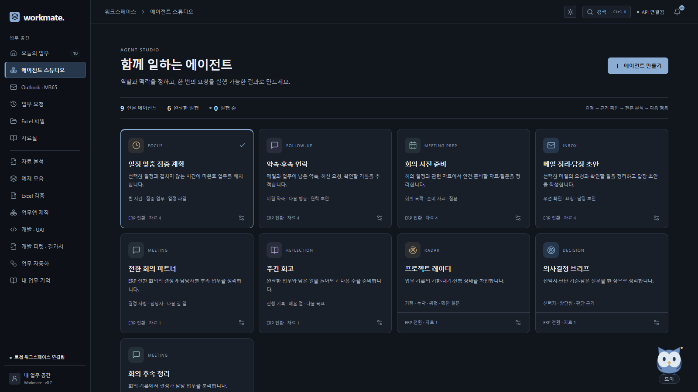

workmate.개인 업무 비서 플랫폼 · v0.7
YOUR PERSONAL WORKSPACE
내 일을 기억하는
가장 가까운 비서.
해야 할 일, 주고받는 메일, 오늘의 일정까지. Workmate는 업무의 맥락을 기억하고
개인 비서·전문 에이전트·업무 도구를 연결해 다음 행동으로 이어가는 공간입니다.


01개인 비서와 Windows Mini
브라우저 밖의 모아, 빠른 대화와 알림. 업무 기억·오늘 계획·집중 타이머를 한곳에서 이어갑니다.
02메일에서 답장과 다음 업무로
Outlook 읽기 연결 또는 EML·ICS 파일로 필요한 자료만 가져옵니다. 요청·약속·회의 준비를 정리하고 검토할 답장 EML을 만듭니다.
03일정 사이의 집중 시간
선택한 일정과 겹치지 않는 시간에 미완료 업무를 배치합니다. 날짜·집중·휴식을 정하고 ICS를 받아 캘린더에 가져옵니다.
04전문 에이전트와 협업 미션
지침·프로젝트·자료·기억을 프로필마다 설정합니다. 최대 4개 에이전트에 같은 목표를 맡기고 근거·결과·다음 행동을 확인합니다.
05Excel 업무 품질 검증
수식·입력·규칙의 변경을 셀별로 비교합니다. 검토한 수식은 원본을 보존한 사본에 복원하고 다시 검사합니다.
06티켓에서 UAT 결과서까지
개발 요구와 실행한 화면 검증을 연결합니다. 날짜·담당자·항목별 판정·캡처를 결과서와 전달 묶음으로 준비합니다.
필요한 자료 선택 → 역할과 지침 → 실행 과정·원문 근거 → 결과서·답장·일정 → 선택한 다음 행동
8개 전문 분야 + 8개 업무 도구
메일 정리·답장 초안회의 사전 준비약속·후속 연락일정 맞춤 집중 계획회의 후속 정리의사결정 브리프프로젝트 레이더주간 회고
시작하기 · 온라인·Windows 설치형. 개인 LLM API로 맥락 분석을 확장합니다. Outlook 연결에는 본인 앱 등록·Microsoft 로그인·조직 승인이 필요합니다. EML·ICS 파일은 연결 없이 가져옵니다.
확인하기 · 답장 전송과 캘린더 등록은 사용자가 수행합니다. Excel은 정적 검사, UAT는 지원 업무앱의 격리 검증입니다. 온라인 방문 세션은 만료·서버 재시작 시 초기화될 수 있습니다.
sagytic.github.io/workmate · GitHub · 워크스페이스 열기 ↗2026.10.23